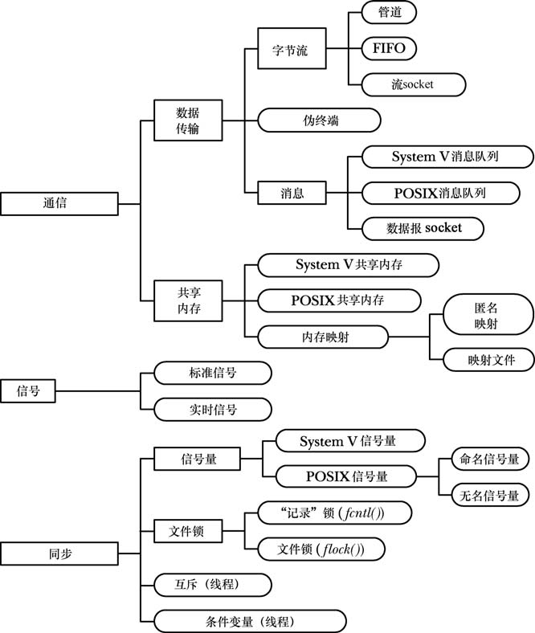
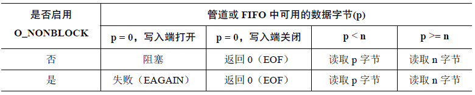
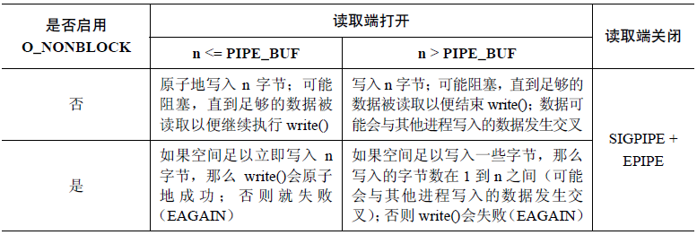
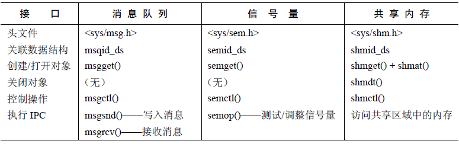
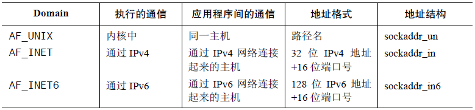

简介
UNIX 系统上各种通信和同步工具可以根据功能分成三类：
- 通信：这些工具关注进程之间的数据交换。
- 同步：这些进程关注进程和线程操作之间的同步。
- 信号：尽管信号的主要作用并不在此，但在特定场景下仍然可以将它作为一种同步技术。更罕见的是信号还可以作为一种通信技术：信号编号本身是一种形式的信息，并且可以在实时信号上绑定数据（一个整数或指针）。
这些工具的分类如下图所示：
通常使用通用术语进程间通信（IPC）指代所有这些工具。
管道和FIFO
概述
管道可以用来在相关进程之间传递数据。FIFO 是管道概念的一个变体，它们之间的一个重要差别在于FIFO 可以用于任意进程间的通信。一个管道有如下几个特征：
- 一个管道是一个字节流。从管道中读取数据的进程可以读取任意大小的数据块，而不管写入进程写入管道的数据块的大小是什么。此外，通过管道传递的数据是顺序的，从管道中读取出来的字节的顺序与它们被写入管道的顺序是完全一样的。
- 如果试图从一个当前为空的管道中读取数据，将会被阻塞直到至少有一个字节被写入到管道中为止。如果管道的写入端被关闭了，那么从管道中读取数据的进程在读完管道中剩余的所有数据之后将会看到文件结束，即
read()返回0 - 管道的数据传递方向是单向的，一端用于写入，另一端用于读取
- 如果多个进程写入同一个管道，那么如果它们在一个时刻写入的数据量不超过PIPE_BUF字节（Linux系统下这个值为4096），那么就可以确保写入的数据不会发生相互混合的情况。
- 管道其实是一个在内核内存中维护的缓冲器，这个缓冲器的存储能力是有限的。一旦管道被填满之后，后续向该管道的写入操作就会被阻塞直到读者从管道中移除了一些数据为止。
创建与使用
pipe系统调用可以创建一个新的管道：
1 |
|
如果调用成功，则会在数组filedes中返回两个打开的文件描述符，filedes[0]表示管道的读取端，filedes[1]表示管道的写入端。
与所有的文件描述符一样，可以使用read和write系统调用在管道上执行I/O操作。一旦向管道的写入端写入数据之后立即就能从管道的读取端读取数据。管道上的read()调用会读取的数据量为所请求的字节数与管道中当前存在的字节数两者之间较小的那个，而管道为空时则阻塞。也可以在管道上使用stdio函数（printf()、scanf()等），只需要首先使用fdopen()获取一个与filedes中的某个描述符对应的文件流即可。
由于子进程会继承父进程的文件描述符的副本，因此可以通过管道来实现相关进程之间的通信。相关进程指的是这些进程来自于同一个祖先进程，且管道由祖先进程所创建。这些进程必须关闭未使用的管道文件描述符，否则会导致出错。
当所有子进程都关闭了管道的写入端的文件描述符之后，父进程在管道上的read()就会结束并返回文件结束（0）。根据这一特性可以将管道作为一种进程同步的方法。这种方法可以同来协调一个进程的动作使之与多个其他（相关）进程匹配。当然，也可以使用其它的同步结构。
创建管道时，为管道两端分配文件描述符将会优先选择可用描述符中数值最小的，因此可以使用这一特性，将管道的输入和输出端绑定为进程的标准输入或输出。可以通过创建管道时先关闭标准输入/输出，或者是使用dup2来复制文件描述符。
与shell命令通信
管道的一个常见用途是执行shell命令，并读取其输出或向其发送一些输入。popen和pclose函数可以简化这一任务：
1 |
|
popen函数创建一个管道，然后创建一个子进程来执行shell，而shell又创建了一个子进程来执行command字符串。mode参数是一个字符串，它确定调用进程是从管道中读取数据（'r'），也就是命令的输出被送入到管道的输入端；还是将数据写入到管道中（'w'），也就是命令的输入来自于调用进程。
使用system()时，shell命令的执行是被封装在单个函数调用中的；而使用popen()时，调用进程是与shell命令并行运行的，然后会调用pclose()。
FIFO
从语义上来讲，FIFO 与管道类似，它们两者之间最大的差别在于FIFO 在文件系统中拥有一个名称，并且其打开方式与打开一个普通文件是一样的。这样就能够将FIFO 用于非相关进程之间的通信（如客户端和服务器）。
一旦打开了FIFO，就能在它上面使用与操作管道和其他文件的系统调用一样的I/O系统调用。与管道一样，FIFO 也有一个写入端和读取端，并且从管道中读取数据的顺序与写入的顺序是一样的。FIFO 的名称也由此而来：先入先出。FIFO 有时候也被称为命名管道。
创建一个FIFO的命令如下：
1 | mkfifo [-m mode] pathname |
其中pathname指的是创建的FIFO的名称，-m选项用来指定权限mode（工作方式与chmod一样）
要在程序中创建一个FIFO，则可以使用mkfifo()函数：
1 |
|
当一个进程打开一个FIFO的一端时，如果FIFO的另一端还没有被打开，那么该进程会被阻塞。但有些时候阻塞并不是期望的行为，而这可以通过在调用open()时指定O_NONBLOCK标记来实现。如果打开FIFO是为了写入，并且还没有打开FIFO的另一端来读取数据，那么open()调用会失败，并将errno设置为ENXIO。
读写语义
管道和FIFO上read()操作的语义可以总结为下表：

write()操作的语义如下表：

System V IPC
简介
System V IPC是首先在System V中被广泛使用的三种IPC机制的名称并且之后被移植到了大多数UNIX实现中以及被加入了各种标准中。System V IPC包括三种不同的进程间通信机制：消息队列、信号量和共享内存。System V IPC的编程接口可汇总为下表：

消息队列
创建或打开
使用msgget()系统调用可以创建一个新的消息队列，或者获得一个已有队列的标识符：
1 |
|
key参数可以设置为IPC_PRIVATE，这样会创建一个新的IPC对象；或者是使用ftok()函数生成。msgflg参数可以为0，或者加上掩码IPC_CREAT（如果key不存在则创建新的消息队列）、IPC_EXCL（如果指定IPC_CREAT且key对应的队列已存在，则返回错误）。
消息交换
消息队列上的I/O操作可以使用下面的函数：
1 |
|
msgsnd系统调用向消息队列写入一条信息，msqid代表消息队列标识符，msgp为要发送的消息，msgsz为发送的消息长度，msgflg为位掩码，用于控制msgsnd的操作，目前只定义了IPC_NOWAIT这一个标记，代表执行非阻塞的发送操作。
向消息队列写入消息要求具备在该队列上的写权限。
msgrcv系统调用从消息队列中读取（以及删除）一条消息，并将其内容复制到msgp指向的缓冲区，maxmsgsz代表mtext的最大长度。读取消息的顺序无需与消息被发送的一致。可以根据mtype字段的值来选择消息，而这个选择过程是由msgtyp参数来控制的：如果msgtyp等于0，则删除队列的第一条信息；如果大于0，则将队列中第一条mtype等于msgtyp的消息删除并返回给调用进程；如果小于0则将等待消息当成优先队列，返回mtype最小，且数值小于等于msgtyp绝对值的第一条消息。msgflg是一个位掩码，可以为IPC_NOWAIT、MSG_EXCEPT、MSG_NOERROR这三个掩码其中0个或多个的或运算。
消息队列控制
msgctl系统调用可以控制消息队列：
1 |
|
msqid代表要操作的消息队列；cmd指定队列上要执行的操作，它的取值为如下三个中的一个：
- IPC_RMID：立即删除消息队列对象及其关联的
msqid_ds数据结构，队列中所有剩余消息丢失，所有被阻塞的读写进程会被唤醒 - IPC_STAT：将与这个消息队列关联的
msqid_ds数据结构的副本放到buf指向的缓冲区中 - IPC_SET：使用
buf指向的缓冲区提供的值更新与这个消息队列关联的msqid_ds数据结构中被选中的字段。
关联数据结构
每个消息队列都有一个关联的msqid_ds数据结构，形式如下：
1 | struct msqid_ds{ |
缺点
- 消息队列是通过标识符引用的，而不是像大多数其他UNIX I/O机制那样使用文件描述符。因此无法使用基于文件描述符的I/O技术
- 使用键而不是文件名来标识消息队列，会增加额外的程序设计复杂性
- 消息队列无连接，内核不会维护引用队列的进程数
- 消息队列总数、消息大小以及单个队列的容量都有限制
信号量
简介
System V信号量不是用来在进程间传输数据的，而是用来同步进程的动作。信号量的一个常见用途是同步对一块共享内存的访问以防止出现一个进程在访问共享内存的同时另一个进程更新这块内存的情况。
一个信号量是一个由内核维护的整数，其值被限制为大于或等于0。在一个信号量上可以执行各种操作（即系统调用），包括：
- 将信号量设置为一个绝对值
- 在信号量当前值的基础上加/减1
- 等待信号量的值等于0
当减小一个信号量的值时，内核会将所有试图将信号量值降低到0之下的操作阻塞。如果信号量的当前值不为0，那么等待信号量的值等于0的调用进程将会发生阻塞。
使用System V 信号量的常规步骤如下。
- 使用
semget()创建或打开一个信号量集。 - 使用
semctl()SETVAL或SETALL操作初始化集合中的信号量。（只有一个进程需要完成这个任务。 - 使用
semop()操作信号量值。使用信号量的进程通常会使用这些操作来表示一种共享资源的获取和释放。 - 当所有进程都不再需要使用信号量集之后使用
semctl()IPC_RMID 操作删除这个集合。（只有一个进程需要完成这个任务。）
创建或打开
semget()系统调用创建一个新信号量集，或者获取一个既有集合的标识符：
1 |
|
key参数可以设置为IPC_PRIVATE，这样会创建一个新的IPC对象；或者是使用ftok()函数生成。如果要创建一个新的信号量集，那么nsem参数会指定信号量的数量（必须大于0）；如果要获取一个既有集的标识符，则nsem参数需要小于或等于集合大小。semflg参数为一个位掩码，指定了施加于新信号量集之上的权限或需检查的一个既有集合的权限。
控制信号量
semctl()系统调用在一个信号量集或集合中的单个信号量上执行各种控制操作：
1 |
|
semid参数是操作所施加的信号量集的标识符。对于那些在单个信号量上执行的操作，semnum参数标识出了集合中的具体信号量。对于其他操作则会忽略这个参数，并且可以将其设置为0。cmd参数指定了需执行的操作。
第四个参数arg是一个union类型的变量，需要在程序中显式定义这个类型：
1 | union semun{ |
cmd参数可以设置的值及其对应的操作如下：
- 常规控制操作：
- IPC_RMID：立即删除信号量集及其关联的
semid_ds数据结构 - IPC_STAT：在
arg.buf指向的缓冲器中放置一份与这个信号量集相关联的semid_ds数据结构的副本 - IPC_SET：使用
arg.buf指向的缓冲器中的值来更新与信号量集关联的semid_ds数据结构中的字段
- IPC_RMID：立即删除信号量集及其关联的
- 获取和初始化信号量值
- GETVAL：返回由
semid指定的信号量中第semnum个信号量的值 - SETVAL：将
semid指定的信号量集中的第semnum个信号量的值初始化为arg.val - GETALL：获取由
semid指向的信号量集中所有信号量的值并将它们放在arg.array指向的数组中。程序员必须要确保该数组具备足够的空间。这个操作将忽略semnum参数 - SETALL：使用
arg.array指向的数组中的值初始化semid指向的集合中的所有信号量。这个操作将忽略semnum参数
- GETVAL：返回由
- 获取单个信号量的信息
- GETPID：返回上一个在该信号量上执行
semop()进程的ID - GETNCNT：返回正在等待信号量值增长的进程数
- GETZCNT：返回正在等待信号量的值变为0的进程数
- GETPID：返回上一个在该信号量上执行
信号量关联数据结构
每个信号量集都有一个关联的semid_ds数据结构，其形式如下：
1 | struct semid_ds{ |
信号量操作
semop系统调用在semid标识的信号量集中的信号量上面执行一个或者多个操作：
1 |
|
sops参数是一个指向数组的指针，数组中包含了需要执行的操作，nsops参数给出了数组的大小（数组至少需包含一个元素）。操作将会按照在数组中的顺序以原子的方式被执行。sop数组中的元素是形式如下的结构：
1 | struct sembuf{ |
如果存在多个因减小一个信号量值而发生阻塞的进程，它们对该信号量减去的值是一样的，那么当条件允许时无法确定到底哪个进程会首先被允许执行操作。另一方面，如果多个因减小一个信号量值而发生阻塞的进程对该信号量减去的值是不同的，那么会按照先满足条件先服务的顺序来进行。
假设一个进程在调整完一个信号量值（如减小信号量值使之等于0）之后终止了，不管是有意终止还是意外终止。在默认情况下，信号量值将不会发生变化。这样就可能会给其他使用这个信号量的进程带来问题。为避免这种问题的发生，在通过semop()修改一个信号量值时可以使用SEM_UNDO标记。当指定这个标记时，内核会记录信号量操作的效果，然后在进程终止时撤销这个操作。不管进程是正常终止还是非正常终止，撤销操作都会发生。
缺点
- 信号量是通过标识符而不是大多数UNIX I/O 和IPC 所采用的文件描述符来引用的。这使得执行诸如同时等待一个信号量和文件描述符的输入之类的操作就会变得比较困难。
- 使用键而不是文件名来标识信号量增加了额外的编程复杂度。
- 创建和初始化信号量需要使用单独的系统调用意味着在一些情况下必须要做一些额外的编程工作来防止在初始化一个信号量时出现竞争条件。
- 内核不会维护引用一个信号量集的进程数量。这就给确定何时删除一个信号量集增加了难度，并且难以确保一个不再使用的信号量集会被删除。
- System V 提供的编程接口过于复杂。在通常情况下，一个程序只会操作一个信号量。同时操作集合中多个信号量的能力有时侯是多余的。
- 信号量的操作存在诸多限制。这些限制是可配置的，但如果一个应用程序超出了默认限制的范围，那么在安装应用程序时就需要完成额外的工作。
共享内存
简介
共享内存允许两个或多个进程共享物理内存的同一块区域（通常被称为段）。由于一个共享内存段会成为一个进程用户空间内存的一部分，因此这种IPC机制无需内核介入。所有需要做的就是让一个进程将数据复制进共享内存中，并且这部分数据会对其他所有共享同一个段的进程可用。
另一方面，共享内存这种IPC机制不由内核控制意味着通常需要使用某些同步方法，使得进程不会出现同时访问共享内存的情况。
为使用一个共享内存段通常需要执行下面的步骤。
- 调用
shmget()创建一个新共享内存段或取得一个既有共享内存段的标识符（即由其他进程创建的共享内存段）。这个调用将返回后续调用中需要用到的共享内存标识符。 - 使用
shmat()来附上共享内存段，即使该段成为调用进程的虚拟内存的一部分。 - 此刻在程序中可以像对待其他可用内存那样对待这个共享内存段。为引用这块共享内存，程序需要使用由
shmat()调用返回的addr值，它是一个指向进程的虚拟地址空间中该共享内存段的起点的指针。 - 调用
shmdt()来分离共享内存段。在这个调用之后，进程就无法再引用这块共享内存了。这一步是可选的，并且在进程终止时会自动完成这一步。 - 调用
shmctl()来删除共享内存段。只有当当前所有附加内存段的进程都与之分离之后内存段才会被销毁。只有一个进程需要执行这一步。
创建或打开
shmget()系统调用创建一个新的共享内存段或者获取一个既有段的标识符，新创建的内存段中，所有内容会被初始化为0：
1 |
|
key参数是IPC_PRIVATE值或由ftok()生成的键。size代表要分配的字节数，会被提升到最近的系统分页大小的整数倍。shmflg参数用于控制shmget的操作，可以为IPC_CREAT、IPC_EXCL、SHM_HUGETLB（允许使用巨页的共享内存段）、SHM_NORESERVE这四个值进行或运算的结果。
使用
shmat()系统调用可以将shmid标识的共享内存段附加到调用进程的虚拟地址空间：
1 |
|
shmaddr和shmflg位掩码参数中SHM_RND位的设置控制着段如何被附加上去：
- 如果
shmaddr为NULL，那么段会被附加到内核选择的一个合适的地址 - 如果
shmaddr不为NULL，且没有设置SHM_RND，则会被附加到shmaddr指定的地址处，它必须是系统分页大小的倍数 - 如果
shmaddr不为NULL，并且设置了SHM_RND，那么段会被映射到的地址为在shmaddr中提供的地址被舍入到最近的常量SHMLBA（shared memory low boundaryaddress）的倍数。这个常量等于系统分页大小的某个倍数。
要附加一个共享内存段以供只读访问，那么就需要在shmflg中指定SHM_RDONLY标记。如果在shmflg中指定了SHM_REMAP，在指定了这个标记之后shmaddr的值不能为NULL。这个标记要求shmat()调用替换起点在shmaddr处长度为共享内存段的长度的任何既有共享内存段或内存映射。
当一个进程不再需要访问一个共享内存段时就可以调用shmdt()，将该段分离出其虚拟地址空间。shmaddr参数标识出了待分离的段，它应该是由之前的shmat()调用返回的一个值：
1 |
|
通过fork()创建的子进程会继承其父进程附加的共享内存段。因此，共享内存为父进程和子进程之间的通信提供了一种简单的IPC 方法。
在exec()操作之后，所有附加的共享内存段都会被分离。在进程终止之后共享内存段也会自动被分离。
控制操作
shmctl()系统调用在shmid标识的共享内存段上执行一组控制操作：
1 |
|
cmd参数规定了待执行的控制操作，buf参数与控制操作有关，只有部分操作需要指定它的值，其余操作可以设为NULL。
可以执行的操作如下：
- 常规控制操作：
- IPC_RMID：标记这个共享内存段及其关联
shmid_ds数据结构以便删除。如果当前没有进程附加该段，那么就会执行删除操作，否则就在所有进程都已经与该段分离（即当shmid_ds数据结构中shm_nattch字段的值为0 时）之后再执行删除操作。 - IPC_STAT：将与这个共享内存段关联的
shmid_ds数据结构的一个副本放置到buf指向的缓冲区中。 - IPC_SET：使用
buf指向的缓冲区中的值来更新与这个共享内存段相关联的shmid_ds数据结构中被选中的字段。
- IPC_RMID：标记这个共享内存段及其关联
- 加锁和解锁共享内存：
- SHM_LOCK：操作将一个共享内存段锁进内存。
- SHM_UNLOCK：操作为共享内存段解锁以允许它被交换出去。
共享内存关联数据结构
每个共享内存段都有一个关联的shmid_ds数据结构，其形式如下：
1 | struct shmid_ds{ |
POSIX IPC
简介
POSIX.1b实时扩展定义了一组IPC机制，它们与System V IPC 机制类似。这组机制中包括消息队列、信号量和共享内存。它们的编程接口总结如下：

要访问一个POSIX IPC对象就必须要通过某种方式来识别出它。规定的唯一一种用来标识POSIX IPC对象的可移植的方式是使用以斜线打头后面跟着一个或多个非斜线字符的名字，如/myobject。
消息队列
打开、关闭和断开
打开一个消息队列可以使用mq_open函数，调用成功则返回一个消息队列描述符：
1 |
|
其中，name参数为消息队列的标识；oflag参数是位掩码，可以包含的值有O_CREAT、O_EXCL、O_RDONLY、O_WRONLY、O_RDWR和O_NONBLOCK；mode参数是一个位掩码，用于指定施加于消息队列的权限，它可取的值与文件上的掩码值一样；attr参数指定了新消息队列的特性，如果使用NULL则使用默认特性创建队列。
消息队列描述符和打开着的消息队列之间的关系，与文件描述符和打开着的文件描述符之间的关系类似。消息队列描述符是一个进程级别的句柄，它引用了系统中打开着的消息队列描述表中的一个条目，而该条目则引用了一个消息队列对象。
在fork()中，子进程会接收其父进程的消息队列描述符的副本，并且这些描述符会引用同样的打开着的消息队列描述符。当一个进程执行了一个exec()或终止时，所有其打开的消息队列描述符会被关闭。
消息队列的关闭使用mq_close函数：
1 |
|
关闭一个消息队列并不会删除该队列。要删除队列则需要使用mq_unlink()：
1 |
|
消息队列特性
消息队列所具有的特性被保存在mq_attr结构中，它的形式如下：
1 | struct mq_attr{ |
要获取一个消息队列的信息，可以使用mq_getattr()函数：
1 |
|
要修改消息队列特性，可以使用mq_setattr()函数：
1 |
|
交换消息
要发送消息到消息队列，可以使用mq_send函数：
1 |
|
其中，msg_len指定了msg_ptr指向的消息的长度，其值必须小于或等于队列的mq_msgsize特性，否则会返回EMSGSIZE错误。msg_prio表示消息的优先级，消息在队列中是按照优先级的倒序排列，0表示优先级最低。
如果消息队列已经满了（即已经达到了队列的mq_maxmsg限制），那么后续的mq_send()调用会阻塞直到队列中存在可用空间为止，或者在O_NONBLOCK标记起作用时立即失败并返回EAGAIN错误。
mq_receive函数从mqdes引用的消息队列中删除一条优先级最高、存在时间最长的消息，并把删除的消息放置在msg_ptr指向的缓冲区：
1 |
|
不管消息的实际大小是什么，msg_len（即msg_ptr指向的缓冲区的大小）必须要大于或等于队列的mq_msgsize特性，否则mq_receive()就会失败并返回EMSGSIZE错误。如果msg_prio不为NULL，那么接收到的消息的优先级会被复制到msg_prio指向的位置处。
如果消息队列当前为空，那么mq_receive()会阻塞直到存在可用的消息，或在O_NONBLOCK标记起作用时会立即失败并返回EAGAIN 错误。
如果要为发送和接收消息设置超时时间，则可以使用下面的两个函数：
1 |
|
消息通知
POSIX 消息队列能够接收之前为空的队列上有可用消息的异步通知（即队列从空变成了非空）。这个特性意味着已经无需执行一个阻塞的调用，或将消息队列描述符标记为非阻塞并在队列上定期执行mq_receive()调用。进程可以选择通过信号的形式，或通过在一个单独的线程中调用一个函数的形式来接收通知。
mq_notify函数使得调用进程在消息描述符mqdes引用的空队列有一条消息进入时，可以接收到通知：
1 |
|
notification参数指定了进程接收通知的机制。
关于消息通知需要注意以下几点：
- 在任何一个时刻都只有一个进程（“注册进程”）能够向一个特定的消息队列注册接收通知。也就是说一个消息队列只能接受一个进程的注册，只给该进程发送通知
- 只有当一条新消息进入之前为空的队列时，注册进程才会收到通知
- 当向注册进程发送了一个通知之后就会删除注册信息
- 只有当前不存在其他在该队列上调用
mq_receive()而发生阻塞的进程时，注册进程才会收到通知。 - 一个进程可以通过在调用
mq_notify()时传入一个值为NULL的notification参数，撤销自己在消息通知上的注册信息。
POSIX和System V消息队列比较
POSIX消息队列有如下优势：
- 接口简单，且与传统的UNIX文件模型一致
- 使用引用计数，简化了确定何时删除一个对象的任务
- 消息通知特性允许一个（单个）进程能够在一条消息进入之前为空的队列时异步地通过信号或线程的实例化来接收通知。
- 在 Linux（不包括其他UNIX 实现）上可以使用
poll()、select()以及epoll来监控POSIX消息队列
但是POSIX消息队列也有一些劣势：
- 可移植性稍差
- POSIX消息队列严格按照优先级排序，不能像System V消息队列按照类型选择消息
信号量
概述
POSIX信号量有两种：
- 命名信号量：这种信号量拥有一个名字。通过使用相同的名字调用
sem_open()，不相关的进程能够访问同一个信号量。 - 未命名信号量：这种信号量没有名字，相反，它位于内存中一个预先商定的位置处。未命名信号量可以在进程之间或一组线程之间共享。当在进程之间共享时，信号量必须位于一个共享内存区域中（System V、POSIX或
mmap()）。当在线程之间共享时，信号量可以位于被这些线程共享的一块内存区域中（如在堆上或在一个全局变量中）。
POSIX信号量的运作方式与System V信号量类似，即POSIX信号量是一个整数，其值是不能小于0 的。如果一个进程试图将一个信号量的值减小到小于0，那么取决于所使用的函数，调用会阻塞或返回一个表明当前无法执行相应操作的错误。
命名信号量
下列函数用于命名信号量的使用过程：
sem_open()函数打开或创建一个信号量并返回一个句柄以供后续调用使用，如果这个调用会创建信号量的话，还会对所创建的信号量进行初始化。sem_post(sem)和sem_wait(sem)函数分别递增和递减一个信号量值。sem_getvalue()函数获取一个信号量的当前值。sem_close()函数删除调用进程与它之前打开的一个信号量之间的关联关系。sem_unlink()函数删除一个命名信号量，并将其标记为在所有进程关闭该信号量时删除该信号量。
打开命名信号量sem_open()函数的使用方法如下：
1 |
|
其中，name为信号量的名称，oflag参数是一个位掩码，它确定是打开一个已有的信号量（将oflag设置为0）还是创建并打开一个新的信号量（oflag的值为O_CREAT且name对应的信号量不存在）。如果这一函数被用来打开一个既有信号量，则调用时只需要传入name和oflag参数；如果要创建一个新的信号量，则还需要指定mode和value参数。其中mode是一个位掩码，指定了新信号量的权限，它可取的值与文件上的位值一样；value是一个无符号整数，指定了信号量的初始值。
当一个进程打开一个命名信号量时，系统会记录进程与信号量之间的关联关系。sem_close()函数会终止这种关联关系（即关闭信号量），释放系统为该进程关联到该信号量之上的所有资源，并递减引用该信号量的进程数：
1 |
|
打开的命名信号量在进程终止或进程执行了一个exec()时会自动被关闭。
关闭一个信号量并不会删除这个信号量，而要删除信号量则需要使用sem_unlink()。name标识的信号量将会在所有进程都使用完这个信号量时就被销毁。
1 |
|
信号量操作
要等待一个信号量，可以使用下面的函数：
1 |
|
要发布一个信号量则可以使用sem_post()函数：
1 |
|
sem_post()调用会将sem引用信号量的值加1。如果在sem_post调用之前信号量的值为0，并且其它某个进程或者线程因等待递减这个信号量而阻塞，则等待进程会被唤醒。哪个等待进程会被唤醒与系统的调度策略有关。
要获取信号量的当前值，则可以使用sem_getvalue()函数：
1 |
|
这一函数调用会将sem引用的信号量的当前值通过sval指向的变量返回。如果一个或多个进程（或线程）当前正在阻塞以等待递减信号量值，那么sval中的返回值将取决于实现，在Linux系统中会返回0。
未命名信号量
未命名信号量（也被称为基于内存的信号量）是类型为sem_t并存储在应用程序分配的内存中的变量。通过将这个信号量放在由几个进程或线程共性的内存区域中就能够使这个信号量对这些进程或线程可用。
操作未命名信号量所使用的函数与操作命名信号量使用的函数是一样的，除此之外还需要使用sem_init()和sem_destroy(sem)两个函数。
sem_init()使用value参数指定的值，来对sem指向的未命名信号量进行初始化：
1 |
|
pshared参数表明信号量是在线程还是进程间共享。如果pshared等于0，那么信号量将会在调用进程中的线程间进行共享。在这种情况下，sem通常被指定成一个全局变量的地址或分配在堆上的一个变量的地址。线程共享的信号量具备进程持久性，它在进程终止时会被销毁；如果pshared不等于0，那么信号量将会在进程间共享。在这种情况下，sem必须是共享内存区域（一个POSIX 共享内存对象、一个使用mmap()创建的共享映射、或一个System V共享内存段）中的某个位置的地址。
要销毁未命名信号量，则需要使用sem_destroy()函数：
1 |
|
这一函数将会销毁信号量sem，其中sem必须是一个之前使用sem_init()进行初始化的未命名信号量。只有不存在进程或者线程在等待一个信号量时，才能安全销毁这个信号量。
共享内存
概述
POSIX共享内存能够让无关进程共享一个映射区域而无需创建一个相应的映射文件。要使用 POSIX 共享内存对象需要完成下列任务。
- 使用
shm_open()函数打开一个与指定的名字对应的对象。shm_open()函数与open()系统调用类似，它会创建一个新共享对象或打开一个既有对象。shm_open()会返回一个引用该对象的文件描述符。 - 将上一步中获得的文件描述符传入
mmap()调用并在其flags参数中指定MAP_SHARED。这会将共享内存对象映射进进程的虚拟地址空间。与mmap()的其他用法一样，一旦映射了对象之后就能够关闭该文件描述符而不会影响到这个映射。
创建共享内存对象
创建一个共享内存对象的方法如下：
1 |
|
其中，name参数代表待创建或者打开的共享内存对象；oflag参数用于改变调用行为，可以对下面几个值取或运算：O_CREAT（如果对象不存在则创建对象）、O_EXCL（确保调用者是对象的创建者）、O_RDONLY（打开只读访问）、O_RDWR（打开读写访问）、O_TRUNC（将对象长度截断为0）。在一个新共享内存对象被创建时，其所有权和组所有权将根据调用shm_open()的进程的有效用户和组ID来设定，对象权限将会根据mode参数中设置的掩码值来设定。mode参数能取的位值与文件上的权限位值是一样的。
shm_open()返回的文件描述符会设置close-on-exec标记，因此当程序执行了一个exec()时文件描述符会被自动关闭。
一个新共享内存对象被创建时其初始长度会被设置为0。这意味着在创建完一个新共享内存对象之后通常在调用mmap()之前需要调用ftruncate()来设置对象的大小，以及后续使用ftruncate()来扩大或者收缩共享内存对象。在扩展一个共享内存对象时，新增加的字节会被自动初始化为0。
在任何时候都可以在shm_open()返回的文件描述符上使用fstat()以获取一个stat结构，该结构的字段会包含与这个共享内存对象相关的信息。使用fchmod()和fchown()能够分别修改共享内存对象的权限和所有权。
删除共享内存对象
POSIX共享内存对象至少具备内核持久性，即它们会持续存在直到被显式删除或系统重启。当不再需要一个共享内存对象时就应该使用shm_unlink()删除它：
1 |
|
shm_unlink()函数会删除通过name指定的共享内存对象。删除一个共享内存对象不会影响对象的既有映射（它会保持有效直到相应的进程调用munmap()或终止），但会阻止后续的shm_open()调用打开这个对象。一旦所有进程都解除映射这个对象，对象就会被删除，其中的内容会丢失。
SOCKET
简介
socket是一种IPC方法，它允许位于同一主机（计算机）或使用网络连接起来的不同主机上的应用程序之间交换数据。在一个典型的客户端/服务器场景中，应用程序使用socket进行通信的方式如下：
- 各个应用程序创建一个socket
- 服务器将自己的socket绑定到一个地址上，使得客户端可以定位到它的位置
socket存在于一个通信domain中，它确定了识别出一个socket的方法，并确定其通信范围。现代操作系统至少支持UNIX、IPv4和IPv6这三个domain。它们的区别如下图：
每一个socket实现都至少提供了流和数据报这两种类型。流socket提供了一个可靠的双向字节流通信信道，可以保证发送的数据完整地到达接收端，但是数据不存在消息边界的概念。它类似于使用一对允许在两个应用程序之间双向通信的管道，但是socket允许在网络上进行通信。流socket的正常工作需要一对相互连接的socket，因此它也常常被称为面向连接的。
而数据报socket则允许数据以数据报的消息形式进行交换，因此数据的消息边界被保留下来。但是这种方式的数据传输是不可靠的，消息到达可能是无序的、重复的甚至无法到达。它属于无连接的socket。
系统调用
要创建一个socket，可以使用socket()系统调用：
1 |
|
其中domain参数指定了socket的通信domain；type参数指定了socket类型，创建流socket时为SOCK_STREAM，创建数据报socket时被设为SOCK_DGRAM；protocol参数通常被设置为0。
如果要将一个socket绑定到一个地址上，则可以使用bind()系统调用：
1 |
|
其中，sockfd参数是一个socket()调用获得的文件描述符，addr参数为一个指针，指向socket绑定的地址的结构，这个数据结构类型取决于socket domain。addrlen参数则指定了地址结构数据的大小。一般来说，会将一个服务器的socket绑定到一个众所周知的地址，这个地址是固定的，且客户端应用程序提前知道。
sockaddr数据结构的定义如下：
1 | struct sockaddr{ |
要关闭一个socket，则可以使用close()函数，这会将双向通信通道的两端全部关闭。如果要实现更精确的控制，则可以使用shutdown()函数：
1 |
|
其中，how参数的值可以为如下几种：
- SHUT_RD：关闭连接的读端，之后的读操作将会返回文件结尾
- SHUT_WR：关闭连接的写端，后续再执行写操作则会产生SIGPIPE信号以及EPIPE错误
- SHUT_RDWR：将连接的读写端全部关闭
需要注意的是，shutdown()并不会关闭文件描述符，必须调用close()关闭。
流socket
流socket的运作原理如下：
socket()系统调用将会创建一个socket，这相当于安装一个电话。为了使得两个应用程序能够通信，每个应用程序都必须要创建一个socket。- 一个应用程序在进行通信之前必须要将其socket连接到另一个应用程序的socket上。两个socket的连接过程如下：
- 一个应用程序调用
bind()将socket绑定到一个地址上，然后调用listen()通知内核它接受接入连接的意愿。 - 其它应用程序通过调用
connect()建立连接，同时指定需要连接的socket地址 - 调用
listen()的应用程序使用accept()接受连接。如果在对等应用程序调用connect()之前执行了accept()，那么accept()操作会阻塞。
- 一个应用程序调用
- 一旦建立了一个连接之后，就可以在应用程序之间进行双向数据传输，直到其中一个使用
close()关闭连接为止。通信是通过传统的read()和write()系统调用，或通过一些提供了额外功能的socket特定系统调用（如send()和recv()）来完成的。
流socket通常可以分为主动和被动两种。在默认情况下，使用socket()创建的socket是主动的。一个主动的socket可用在connect()调用中，来建立一个到被动socket的连接。而一个被动socket（也被称为监听socket）是一个通过调用listen()以被标记成允许接入连接的socket。在大多数使用流socket的应用程序中，服务器会执行被动式打开，而客户端会执行主动式打开。
这一过程中涉及到的系统调用包括：
1 |
|
数据报socket
数据报socket的运作原理如下：
- 所有需要发送和接收数据报的应用程序都需要使用
socket()创建一个数据报socket。这可以理解为创建两个邮箱。 - 为允许另一个应用程序发送其数据报，一个应用程序需要使用
bind()将其socket绑定到一个众所周知的地址上。一般来讲，一个服务器会将其socket绑定到一个众所周知的地址上，而一个客户端会通过向该地址发送一个数据报来发起通信。 - 要发送一个数据报，一个应用程序需要调用
sendto()，它接收的其中一个参数是数据报发送到的socket的地址。 - 为接收一个数据报，一个应用程序需要调用
recvfrom()，它在没有数据报到达时会阻塞。由于recvfrom()允许获取发送者的地址，因此可以在需要的时候发送一个响应。 - 当不再需要socket时，应用程序需要使用
close()关闭socket。
其中涉及到的系统调用有：
1 |
|
其中flags是一个位掩码，控制socket特定的I/O特性。对于recvfrom函数来说，如果不关心发送者的地址，那么可以将src_addr和addrlen都指定为NULL，此时等价于使用recv()来接收一个数据报。
不管length的参数值是什么，recvfrom()只会从一个数据报socket中读取一条消息。如果消息的大小超过了length字节，那么消息会被静默地截断为length字节。
UNIX domain
在UNIX domain中，socket地址使用路径名来表示，地址结构的定义如下：
1 | struct sockaddr_un{ |
关于UNIX domain socket的使用需要注意：
- 无法将一个socket绑定到一个既有路径名上（
bind()会失败并返回EADDRINUSE 错误）。通常会将一个socket绑定到一个绝对路径名上，这样这个socket就会位于文件系统中的一个固定地址处 - 一个socket只能绑定到一个路径名上，相应地，一个路径名只能被一个socket绑定
- 无法使用
open()打开一个socket - 当不再需要一个socket时，可以使用
unlink()（或remove()）删除其路径名条目
对于UNIX domain socket来讲，数据报的传输是在内核中发生的，并且也是可靠的。所有消息都会按顺序被递送，并且也不会发生重复的状况。
Linux 特有的一项特性是，它允许将一个UNIX domain socket绑定到一个名字上，但不会在文件系统中创建该名字。要创建一个抽象绑定，就需要将sun_path字段的第一个字节指定为null字节（\0）。这样就能够将抽象socket名字与传统的UNIX domain socket路径名区分开来。余下的字节为socket定义了抽象名称。
socket文件的所有权和权限决定了哪些进程能够与这个socket进行通信。
- 要连接一个UNIX domain流socket，需要在该socket文件上拥有写权限。
- 要通过一个UNIX domain数据报socket发送一个数据报，需要在该socket文件上拥有写权限。
- 此外，需要在存放socket路径名的所有目录上都拥有执行（搜索）权限。
有时候需要让单个进程创建一对socket并将它们连接起来。socketpair系统调用可以快捷地实现这一操作：
1 |
|
其中，domain参数必须为AF_UNIX，type可以为SOCK_DGRAM或SOCK_STREAM，protocol参数必须为0，sockfd数组返回引用这两个相互连接socket的文件描述符。
Internet domain
Internet domain流socket是基于TCP之上的，它们提供了可靠的双向字节流通信信道。而Internet domain数据报socket是基于UDP之上的，它属于不可靠连接。Internet domain socket的地址有IPv4和IPv6两种，它们分别对应的数据结构如下：
1 | struct sockaddr_in{ |
1 | struct sockaddr_in6{ |
也可以使用通用的sockaddr_storage结构，这个数据结构的空间足以存储任意类型的socket地址：
1 |
|
由于IP地址在计算机中被存储为二进制形式，不方便阅读，下面两个函数可以方便将IPv4和IPv6地址的二进制形式和点分十进制表示法或者十六进制字符串表示法之间转换：
1 |
|
其中，inet_pton()用于将src_str中所包含的字符串转换为网络字节序的二进制IP地址，domain参数为AF_INET或者AF_INET6，转换得到的地址会被放在addrptr指向的结构中；而inet_ntop()函数执行逆向的转换，addrptr指向一个待转换的in_addr或者in_addr6结构，得到的字符串会被存放在dst_str指向的缓冲区中，len参数为缓冲区的大小。如果len的值太小，不足以存放转换后的地址，那么函数会返回NULL并将errno设置为ENOSPC。
为了正确计算缓冲区大小，可以使用下面两个常量：
1 |
一个多字节的整数可能会以大端序或者小端序这两种不同的顺序来存储。在特定主机上使用的字节序称为主机字节序，它与硬件架构有关；而在网络中传递的顺序被称为网络字节序，它被规定为大端序。因此，在将整数存储进socket地址结构之前则需要将这些值转换成网络字节序，可以使用下面四个函数完成这一操作：
1 |
|
其它用法
recv()和send()这一组系统调用可以在已连接的套接字上执行I/O操作，它们提供了专属于套接字的功能：
1 |
|
其中，前3个参数于read()和write()一样，最后一个参数为位掩码，用于修改I/O操作的行为。
对于recv函数，flags可以取下面的值：
- MSG_DONTWAIT：让
recv以非阻塞方式执行，如果没有数据可用则立即返回并生成错误码EAGAIN - MSG_OOB：在套接字上接收带外数据，带外数据指的是允许发送端将传输的数据标记为高优先级。任意时刻最多只有1字节数据可以被标记为带外数据。
- MSG_PEEK：从套接字缓冲区中获取一份请求字节的副本，但不会将请求的字节从缓冲区中实际移除
- MSG_WAITALL：如果无法接收
length字节则会阻塞，直到可以从缓冲区接收length字节的数据
而对于send函数，flags可以取下面的值：
- MSG_DONTWAIT：以非阻塞方式执行，如果没有数据可用则立即返回并生成错误码EAGAIN
- MSG_MORE：在Linux系统下，如果指定了MSG_MORE 标记，那么数据会打包成一个单独的数据报。仅当下一次调用中没有指定该标记时，数据才会传输出去
- MSG_NOSIGNAL：当在已连接的流式套接字上发送数据时，如果连接的另一端已经关闭了，指定该标记后将不会产生SIGPIPE信号。相反，
send()调用会失败，伴随的错误码为EPIPE。 - MSG_OOB：在流式套接字上发送带外数据
如果要将磁盘上的文件内容不做修改地传出去，则可以使用sendfile()系统调用。此时，文件内容会被直接传送到套接字上，而不会经过用户空间，因此传输效率更高：
1 |
|
其中，in_fd代表输入文件描述符，out_fd代表输出文件描述符。要求out_fd必须指向一个套接字，而in_fd指向的文件可以进行mmap()操作。参数offset可以指向一个off_t类型的值，指定输入文件的偏移量，代表in_fd指向的文件从这一位置开始可以传输字节，此时数据传输不会修改in_fd的文件偏移量；也可以设置为NULL，此时会从当前的文件偏移量处开始传输，且传输时会更新文件偏移量。count参数指定了请求传输的字节数。
套接字选项能影响到套接字操作的多个功能。下面两个系统调用可以设定和获取套接字选项：
1 |
|
其中，sockfd代表指向套接字的文件描述符，level代表套接字选项适用的协议，optname标识了希望设定或者取出的套接字选项，optval是一个指向缓冲区的指针，用于指定或者返回选项的值，optlen指定了缓冲区的空间大小。